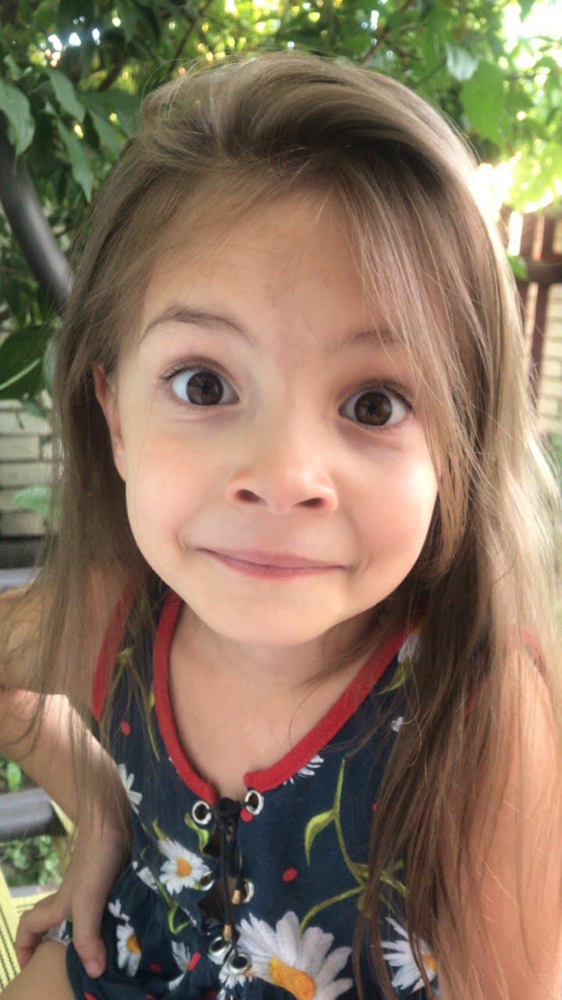

Родилась, навчилась говорити і сказала "Мама, я буду графічним дизайнером". Але в 9 класі. Тоді я вперше почула ті 2 слова разом)
Ніколи не жила сама (а хотілось би),бо колись мала дурість попросити в мами сестричку, а вона дала дві. Є коти. Багато.
Але, мабуть, коли звик до такого дурдому, то самому вже депресивно (ну але я не пробувала, того не стверджую).
За зодіаком я Овен, і то дуже недобре для Терезів)))
Люблю їсти, але не люблю готувати, тому мало їм.
То не я, але можете приблизно уявити мене такою в 5 років)